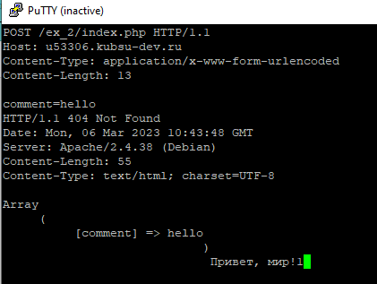

Залить файлы в каталоге files на веб-сервер через GIT
Проверить работоспособность index.php.
Проверить загрузку файлов в браузере из вашего учебного домена.
получить главную страницу методом GET в протоколе HTTP 1.0
получить внутреннюю страницу методом GET в протоколе HTTP 1.1;

определить размер файла file.tar.gz, не скачивая его
определить медиатип ресурса /image.png

отправить комментарий на сервер по адресу /index.php
получить первые 100 байт файла /file.tar.gz
определить кодировку ресурса /index.php